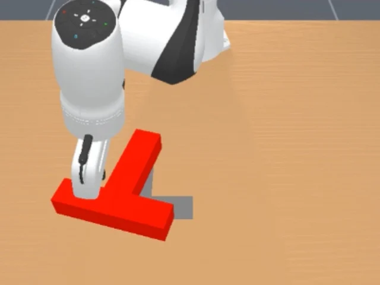
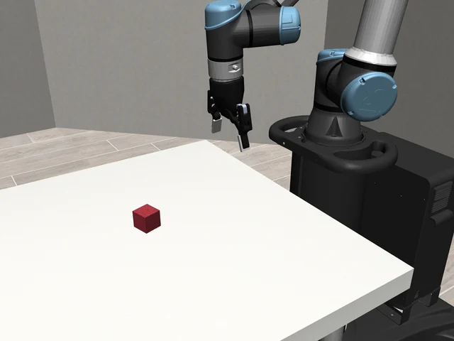
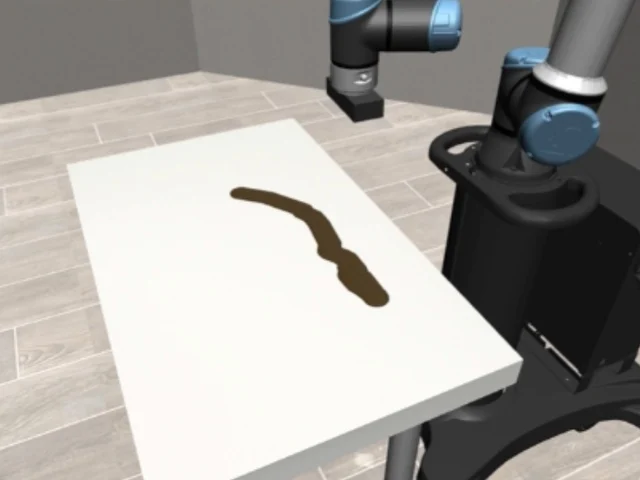
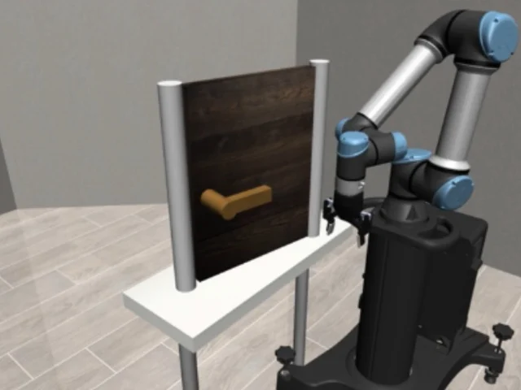
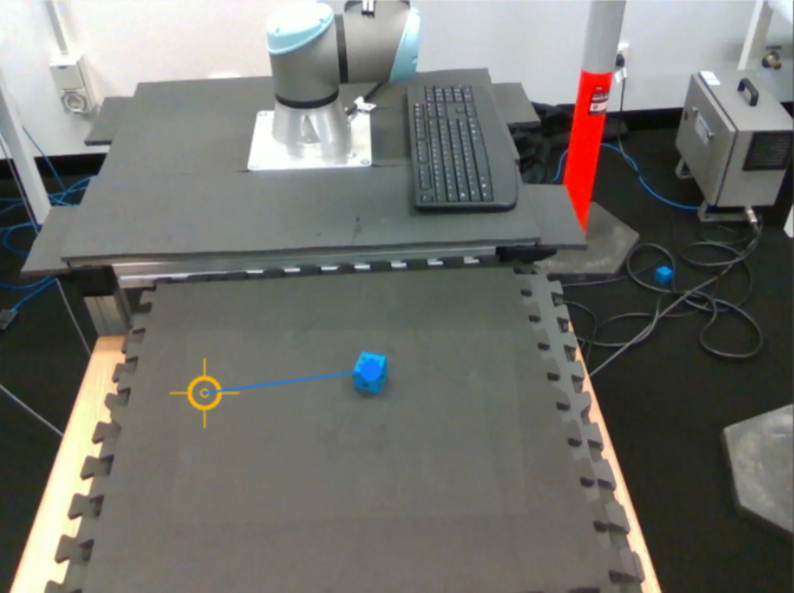

Which demonstration should come next?
Imitation learning copies an expert, so every demonstration costs expert time. After the first demonstrations, a policy can practise on its own, and its failures show what it still lacks. Each new request to the expert, in round r, is then a decision with three parts.
- t*
- When should the expert be queried?
- Ctgt
- Which recurring failure should receive supervision?
- ξ
- Where should the next demonstration begin?
Query-gated methods choose t*, while the other two default to whichever episode triggered the query and the state it had reached. DISEIL keeps the query rule and selects Ctgt and ξ, so one expert interaction can address a deficiency seen across several failures.
One acquisition round
After each round of autonomous practice, the failed rollouts become a single demonstration request.
Perceive
Each failed episode is anchored at t*, the first step that begins a sustained run of loss above a threshold η. That is where the failure begins to emerge, rather than a later state where its effects have piled up. The robot and object state at t* becomes a compact geometric descriptor chosen per task; on Push-T it is the object’s position and rotation, the progress through the episode, and the distance between the object and the end effector.
In parallel, a vision-language model describes the start, t* and end frames, and a text-only prescription model maps that description to a root cause.
Partition
The descriptors are clustered into failure modes, with the number of modes chosen by silhouette score. Language models take no part in this step.
Prioritize
DISEIL selects among the largest modes by how high their loss peaks, and discounts modes close to ones it has already corrected. Prevalence favours corrections that apply to several episodes, severity favours consequential ones, and a memory of corrected modes discourages repeating similar corrections.
Prescribe
The prescription model receives the selected mode’s geometry, up to three annotated failures and the task constraints. It proposes a start ξ: either the state of one cited failure, or a new configuration that bridges two or more related failures.
Every proposal is checked for workspace, reachability and a valid path, and must still be unsolved by the current policy. Rejected proposals go back with the reason and cost no demonstration. After five rejections DISEIL falls back to the nearest failure state it has not tried. The expert then demonstrates once from ξ, and the policy is retrained.
Who does what. The language models only reason about what to demonstrate. Geometric clustering forms the failure modes; size, loss and memory select one; explicit constraints check feasibility; and the learned policy produces every robot action.
Simulation
Five tasks, each with state and with image observations. Every method gets the same initial demonstrations, expert, budget and evaluation.




Three acquisition rounds
Each set of three is one round: a failing rollout, the demonstration given from the prescribed start, and the same seed after the policy is refit with that demonstration. The clips were re-run for filming, and the Door and Wipe policies were rebuilt from their runs’ data. The seeds were chosen as clear examples. One demonstration does not correct every failure in its mode; on Wipe, the refit shown here corrects only the filmed seed.
Push-T (state)
Door (state)
Wipe (state)
Highest mean success in all ten settings, with one tie
The baselines are SafeDAgger, DropoutDAgger, EnsembleDAgger, ThriftyDAgger and Diff-DAgger, which differ mainly in when they query the expert, and, on GridWorld only, Stagger as a random-takeover control.
All values (Table 1)
Held-out success (%) after 20 added demonstrations, mean ± standard error. Bold: highest in the row.
On a real UR5e
We also ran one acquisition round on a physical arm that has to lift a cube. The paper’s experiments are all in simulation; this run is additional to them.

Before and after the targeted demonstration
This is a qualitative run of one task and one acquisition round; the two cube positions are similar, not identical. The initial policy also lifted the cube from this side of the mat in other attempts.
Paper
Scope
The quantitative study is in simulation, where the geometric descriptor uses privileged robot and object state; a physical system would have to estimate these from sensing, and the robustness of the grouping to estimation error is untested. Very small late-stage failure sets may give too little evidence for meaningful clustering. Most experts in the study are scripted or oracle policies, so the experiments miss the variability of human demonstrations. The budget counts whole demonstrations, not expert-controlled steps, so a prescribed demonstration may need different expert effort than a query-triggered correction. In the instrumented settings, language-model reasoning adds 63 to 1,232 seconds per acquisition round; this affects acquisition, not policy execution, and its trade-off against expert effort is not evaluated.
Cite
@inproceedings{khanal2026diseil,
title = {{DISEIL}: Demonstration Distillation for Sample-Efficient Imitation Learning},
author = {Khanal, Suyog and {A V}, Arun Kumar and Rana, Santu},
booktitle = {NeurIPS 2026 Workshop on Neuro-Symbolic Embodied Intelligence (NEmo)},
year = {2026},
url = {https://nemo.semantic.review/papers/32.pdf}
}